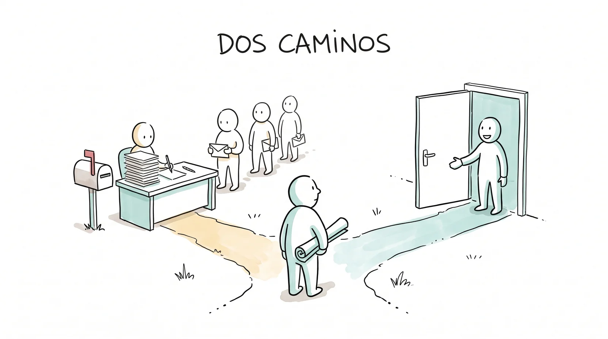
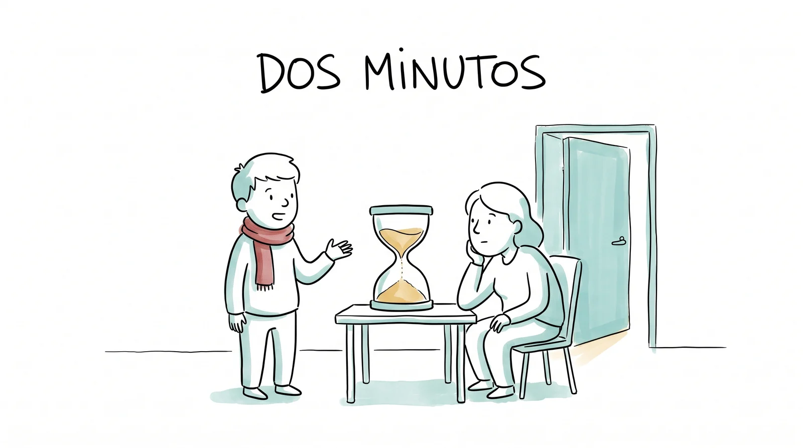

¿A quién se le pide, qué exactamente, y cómo se le dice?
El presupuesto de la presa ya dice lo que falta. Esta clase enseña a salir a conseguirlo. Tiene dos partes que se dan en una sesión larga o en dos: primero cómo se gestiona (a quién, por cuál camino y con qué mensaje), y luego cómo se cuenta el proyecto en voz alta para que alguien dé el siguiente paso. El hilo es la presa de La Florida, y cada mazo cierra con un proyecto productivo de los que el grupo va a encontrar al egresar de Producción Agropecuaria Sustentable.

Salir a conseguir
Abre con la historia de cómo se consiguió la Reserva de la Sierra Gorda. Luego: gestionar como trato, el objetivo común, el mapa de gestión, la gestión directa en cinco pasos (averiguar, acercarse, pedir, agradecer y contar qué pasó), el primer mensaje, el oficio y la visita; y después la convocatoria, que es una competencia con reloj. Cierra con dónde buscar apoyo para un proyecto productivo. La práctica arma el mapa de gestión del componente y el mensaje para pedir la primera cita.

Dos minutos
Empieza por oír un pitch completo con reloj y luego lo desarma: sus cinco partes (qué pasa y a quién, lo que vamos a hacer, lo que cambia, lo que ya está puesto y lo que te pido), el número que se ve, la frase que se puede dibujar, la petición con su escalera, el pitch de pasillo en una frase, los cuatro oídos y las reglas de la asamblea. Cierra con el mismo pitch para una sala de miel. La práctica mide los segundos, revisa el guion y trae reloj para ensayar.
Cómo se da, paso a paso
- Antes de la clase, lo que trae cada equipo. Su presupuesto del componente (el archivo de la práctica del presupuesto o la hoja impresa), una laptop, una frase textual de la consulta (lo que dijo una persona, con sus palabras) y el número de hoy de su componente (cuánta gente, cuánto tiempo, cuántos metros). Sin esas dos cosas no sale la primera parte del pitch.
- Antes de la clase, lo que prepara quien conduce. Las hojas de quien escucha impresas, una por persona, desde la práctica del pitch. Cuatro papelitos: Ayuntamiento, fundación o programa, negocio, asamblea. El acordeón impreso por los dos lados, si se va a repartir. Conviene abrir cada práctica una vez y apretar "Cargar el ejemplo completo" para proyectarlo antes de dar la consigna.
- Parte 1, al aire (5 minutos). "¿A quién se lo van a pedir primero, y qué le van a decir?" Tres respuestas al pizarrón, tal como salgan.
- Mazo 1 (45 minutos). Las que no se recortan: cuándo empieza la gestión, la historia de la Sierra Gorda, el trato, el mapa, los cinco pasos, el primer mensaje con su correo malo, el oficio, la visita, lo que no se aguanta y el reloj de la convocatoria. Trae cuatro momentos para que el grupo participe: la apuesta de los cien pesos, los errores del correo, el reto del PROCODES y "¿Ya es un encargo?". Si el tiempo aprieta se brincan "Tres costumbres de quien gana" y "Dónde buscar si el proyecto es productivo", que quedan como consulta.
- Práctica de gestión (50 minutos). Se proyecta el ejemplo cargado y se lee un renglón en voz alta. Cada equipo escribe lo que le falta, lo acomoda en el mapa y arma el primer mensaje para quien quedó en "Primero". Al cierre, cada equipo lee su renglón de "Primero" y se reescriben las tres respuestas del pizarrón con cargo, cantidad y fecha.
- Parte 2, al aire (5 minutos). La fila de las tortillas: dos personas voluntarias lo intentan con reloj, sin corrección.
- Mazo 2 (45 minutos). Las que no se recortan: oír el pitch completo y desarmarlo, las cinco partes, los golpecitos de "Las mañanitas", ponerle cara, la frase que se puede dibujar, lo que ya está puesto, la petición con su escalera y los cuatro oídos. Trae cinco momentos de participación: la canción a golpecitos, el número que se ve, "¿Humo o foto?", la frase de "y, pero, por eso" y el pitch malo actuado. Si el tiempo aprieta se brincan los tres tamaños, la asamblea y la sala de miel.
- Práctica del pitch (40 minutos). Veinticinco para escribir las cinco partes y la petición para dos oídos; quince para dos ensayos con el reloj de la hoja, el segundo con el guion escondido.
- La ronda de los cuatro oídos (25 minutos). Rondas de seis minutos: dos de pitch, dos de preguntas desde el papel que tocó, dos para llenar la hoja de quien escucha. Cierra la fila de las tortillas, con las mismas dos personas del inicio.
- Si se da en dos sesiones. La primera termina con el mapa de gestión y el mensaje. La segunda abre con la fila de las tortillas.
- Lo que queda para después de la clase. Mandar el mensaje de verdad a quien quedó en "Primero" es decisión de cada equipo con el profesor: antes lo lee alguien de otro equipo, y se avisa al ejido.
Los criterios que se publican
Lo que ya existe en el curso y aquí se usa
- El presupuesto de la presa
- De la práctica del presupuesto y de el presupuesto de la presa sale la lista de lo que falta: lo que quedó sin bolsillo, y lo que tiene bolsillo pero nadie ha ido a pedir. Los cuatro bolsillos del Mazo 2 de esa clase son el punto de partida del mapa de gestión.
- El semáforo y la ruta de la propuesta
- Para el camino de la convocatoria, esta clase no repite lo que ya está: el semáforo decide en quince minutos si vale la pena aplicar, la ruta de la propuesta trae las once estaciones de la consulta al fallo, y la guía del PROCODES, las reglas por dentro.
- El pitch y la Troika de la semana 10
- Las cinco partes de este pitch son los cuatro movimientos de la semana 10 con dos cambios: lo que ya puso la comunidad tiene su propia parte, y la petición se escribe una vez por cada oído. La Troika sigue sirviendo como segunda ronda de retroalimentación.
- El trato de la semana 8
- El mapa de las personas y el trato ensayado de la semana 8 son el antecedente de la visita. Donde esa página habla del Fondo y de la dictaminadora, manda esta clase: se gestiona para la presa, con donantes y aliados en general.
Para quien quiera más
Cinco videos cortos de pitch para ver antes o después de la clase
Todos son de YouTube, de proyectos de estudiantes o comunidades. Tienen pocas vistas y pueden desaparecer: conviene abrirlos antes de proyectarlos. Se escogieron por su guion; no se revisó imagen ni sonido.
- Kuili, Premio Santander 2019 (2 minutos, Huajuapan de León, Oaxaca). El mejor modelo: abre con un problema local y su número, dice la solución y cierra diciendo en qué se va a usar el premio.
- Uniminuto y el Cabildo Indígena Muisca de Suba (1 minuto, Colombia). Una petición directa a una empresa, que dice qué gana ella. Para discutir: no dice cuánto pide y las fechas se contradicen.
- Raíces Vivas, Educación Jalisco 2026 (casi 4 minutos, estudiantes de Zapopan). Tiene todas las partes. Para discutir: más de un minuto de música antes de la primera palabra, y no pide nada.
- Cerros de Cambio (2 minutos y medio, Bogotá). Ordena la idea en tres. Para discutir: tampoco pide nada.
- Takutzi, Hult Prize UNAM (2 minutos y medio). Sirve de contraejemplo: muchas cifras, palabras de humo y lemas, ninguna persona y ninguna petición. Se ve contando tropiezos.
Tres cifras famosas de oratoria que no hay que repetir
- "El 93% de la comunicación es lenguaje corporal." El estudio era sobre cómo se nota si alguien le cae bien o mal a otro. Su autor, Albert Mehrabian, advierte que no aplica a nada más.
- "La atención dura 8 segundos." Salió de un folleto de mercadotecnia de 2015 que no citaba ningún estudio.
- "Una historia se recuerda 22 veces más que un dato." Se repite en todos los cursos y nadie ha podido encontrar el estudio.
Lo que se dice sí importa, la gente sí pone atención cuando algo le interesa y las historias sí ayudan. Lo que no existe son esos números, y quien cita una cifra falsa en un pitch pierde la confianza en todas las demás.
Lo que se retomó de la presentación original del curso, lo que se cambió y lo que se dejó fuera
- Se retomó: los dos caminos (por convocatoria, que pide escribir, y gestión directa, que pide conversar); la convocatoria como competencia; las cuatro preguntas sobre el donante; leer propuestas que ganaron, seguir instrucciones, cuidar ortografía y sumas, y darla a leer a alguien de fuera; decir qué pasa cuando se acaba el dinero; los criterios con que se evalúa; los correos comentados; ir de dos a la visita y repartirse los papeles; los obstáculos de la entrevista; empezar por el problema; informar y motivar; el número que se puede ver; estar preparado más que motivado; el círculo del objetivo común.
- Se cambió: las "palabras poderosas" (fortalecer, empoderar, promover) ahora se enseñan como palabras de humo, porque hoy las trae cualquier solicitud; "maneja tu ansiedad conectándote con el presente" se cambió por dos cosas con estudio detrás, renombrar los nervios y ensayar frente a alguien; el acoso en la entrevista dejó de ser un obstáculo más de la lista y tiene su propia lámina; la lista de sitios donde buscar se revisó dirección por dirección; los nombres propios de los correos se quitaron; el caso de Bolivia y la cifra de la basura de Concá pasaron a las notas del conductor, y en su lugar van ejemplos de la presa y cuentas que el grupo puede comprobar.
- Se dejó fuera: la vestimenta formal como regla (en una oficina de la sierra pesa más la puntualidad y el papel en la mano) y las direcciones que ya no abren.
- Es nuevo: la historia del Grupo Ecológico Sierra Gorda; el mapa de gestión; los cinco pasos con agradecer y contar qué pasó; dónde se averigua; el oficio y el derecho de petición; el reloj de la convocatoria; dónde buscar para un proyecto productivo; oír un pitch completo antes de desarmarlo; el experimento de los golpecitos; la petición con cantidad y fecha y su escalera; "y, pero, por eso"; los cuatro oídos; las reglas de la asamblea; lo que ya está puesto como parte del pitch; las preguntas difíciles; y los dos juegos del calentamiento.
Las fuentes
- Gestión. Fichas del proyecto 887 del Fondo para el Medio Ambiente Mundial y del proyecto ME-M1101 del BID, sobre el Grupo Ecológico Sierra Gorda. GNDR y Change the Game Academy, Movilización de recursos locales: una guía práctica. Kim Klein, Fundraising for Social Change. World Giving Report 2025, capítulo México. INEGI, cuenta satélite de las instituciones sin fines de lucro 2024. JRS Biodiversity Foundation, "Why we decline". Center for Effective Philanthropy, encuesta a solicitantes. Reglas de operación del PROCODES 2026 (Diario Oficial, 15 de enero de 2026). Ley de Planeación del Estado de Querétaro. Artículo 8 de la Constitución.
- Pitch. Newton (1990), por medio de Heath y Heath, Ideas que pegan. Small, Loewenstein y Slovic (2007). Oppenheimer (2006). Cryder, Loewenstein y Scheines (2013). List y Lucking-Reiley (2002) y Karlan y List (2007). Flynn y Lake (2008). Chen, Yao y Kotha (2009). Olson (2015). Clarke, Cornelissen y Healey (2019). Brooks (2014). Menzel y Carrell (1994). Laske y DiGennaro Reed (2024). Kanze, Huang, Conley y Higgins (2018). Ley Agraria, artículos 24 a 31. Geilfus, 80 herramientas para el desarrollo participativo.
- Con cautela. Los estudios sobre donativos e inversionistas se hicieron casi todos en Estados Unidos y con otro tipo de público; aquí se usan como analogía y así se dice en las notas. Varios se conocen por sus resúmenes y no por el texto completo. La adaptación a los cuatro oídos es experiencia de oficio. Los programas agropecuarios y sus reglas se revisaron el 18 de noviembre de 2026, con notas de prensa donde no hubo fuente oficial a la mano, y cambian cada año: antes de darle un dato a un grupo de productores, se confirma en la oficina.
Las sketchplanations de la clase
Catorce dibujos a tinta, uno por idea, generados en Gemini con los prompts de sketchplanations.md. Se proyectan solos, sin texto que compita. Los esquemas de las herramientas (el pitch, la escalera, el mapa de gestión y el objetivo común) están dibujados dentro de los mazos.
Todo abre sin internet, salvo los videos, y se comparte suelto: la carpeta completa se copia al Drive del grupo. Las prácticas guardan en el navegador de cada laptop y descargan un HTML con la fecha. Nada se sube a internet, y en los renglones van cargos y oficinas, no nombres de personas.